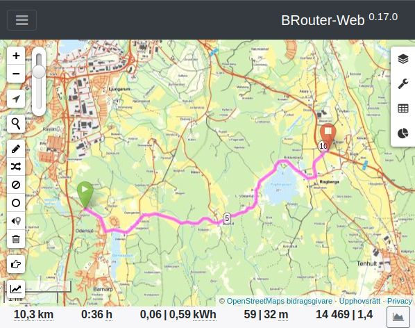

Terrängkarta med asfalt och grusväg
Karta avsedd för ruttplanering och offline-navigering av motorcyklister. Baserad på Lantmäteriet Topografi 50. Geografisk täckning omfattar hela Sverige.

Ruttplanerare

Nedladdning av kartor
För användning offline i mobil, format MBTiles:.mbtiles filer placeras i /sdcard/Android/data/menion.android.locus/files/Locus/mapsFör onlinekarta i Locus kopiera
providers.xml till /sdcard/Android/data/menion.android.locus/files/Locus/mapsOnline/customPublic Folder
Användning i mobil
Rekommenderad app för Android är Locus Map.
Teckenförklaring

Experiment:
Kartapp med realtidsspårning - HastighetsmätareKartapp med realtidsspårning och loggning
Kartorna är skapade av öppna data från Lantmäteriet och Trafikverket med datalicensen Creative Commons CC0.